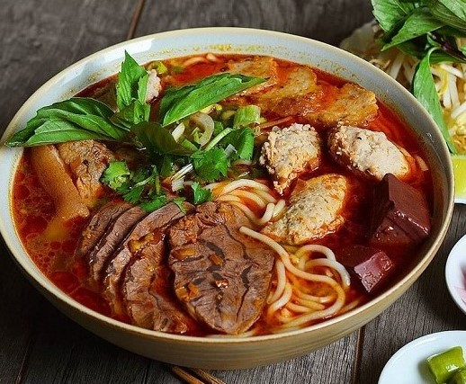

中央料理
中部料理のもう一つの特別なことは、ケーキの贈り物、おいしい軽食の多様性であり、多くの人々に愛されている屋台の食文化を作っています。ジャム、アプリコット、熟したワニ、ミルクナゲットなどの北の典型的な贈り物に言及する必要があります。


中部の観光
中心観光は、常に美味しい料理、美しいビーチ、詩的諸島がほとんどありません。 しかし、この土地に行くとき、あなたは何千年もの間存在していた歴史的なランドマークやレックスを探索することができます。